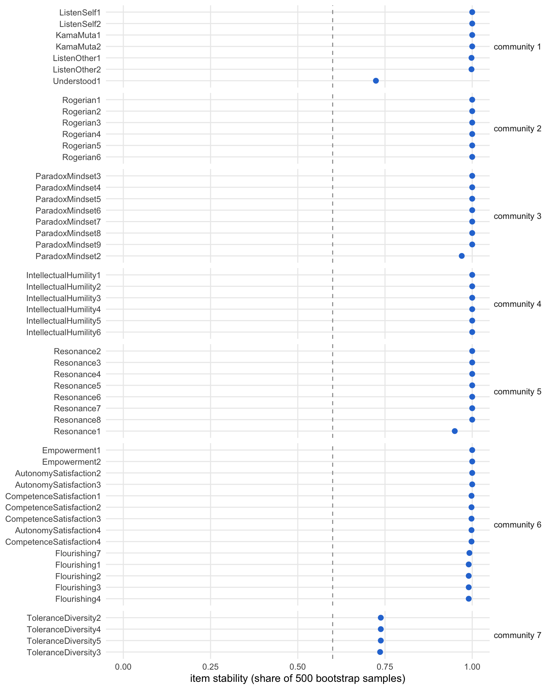
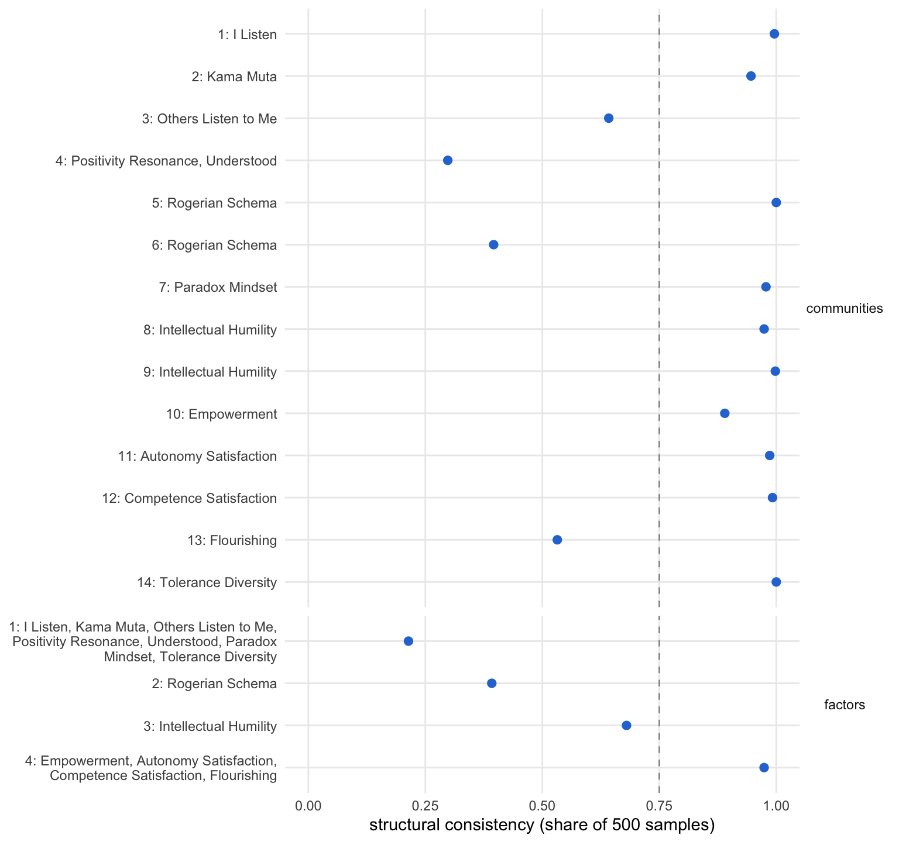

source("R/packages.R") # all packages (Chapter 1)
source("R/settings.R") # waves, conditions, folders (Chapter 1)
df <- readRDS("cache/df.rds") # one row per questionnaire (Chapter 2)
df_wide <- readRDS("cache/df_wide.rds") # one row per person (Chapter 2)
item_names <- names(select(df, ListenOther1:CompetenceNonFrustrated4))
source("R/scales.R") # the 23 scales (Chapter 2)
source("R/structure_pool.R") # the item pool (Chapter 15)16. Exploratory graph analysis
NoteAbout this chapter
Exploratory graph analysis (EGA) estimates a network of the items and finds the communities of items that hang together. Starting from the pool of Chapter 15, three analyses follow one another: the first keeps the items whose community holds across bootstrap samples, the second describes the hierarchical structure of these items at each wave, and the third bootstraps that structure. Each analysis goes through the same six steps, from the items it starts with to where its result goes next; a table at the end follows every scale through the three analyses. Feeds the item-selection and structure steps of the psychometric supplement; Chapter 17 prunes the stable items further.
16.1 How each network analysis is examined
How does EGA find communities? The graphical lasso turns the correlations of the items into a network of partial correlations: two items are linked only if they share something that the other items do not explain, and weak links are set to zero. A community detection algorithm then groups items that are densely linked with each other (Golino & Epskamp, 2017). The bootstrap repeats this on 500 samples drawn from a normal distribution with the observed correlations. An item’s stability is the share of samples in which it lands in the same community as in the observed data (Christensen & Golino, 2021). The hierarchical version (hierEGA) adds a second level: it scores the persons on each community of items (lower order) and runs EGA on these scores, which yields factors of communities (higher order).
What happens in each analysis? The same six steps, in the same order and in three parts: the analysis, its result, and what follows. The diagram shows the path; the list below describes each step.
flowchart TB
subgraph P0["the analysis"]
direction LR
S1["<b>Step 1</b><br>the starting point"]
S1 --> S2["<b>Step 2</b><br>the method and<br>the criterion"]
S2 --> S3["<b>Step 3</b><br>the estimation"]
end
subgraph P1["the result"]
direction LR
S4{{"<b>Step 4</b><br>the result"}}
S4 --> S5["<b>Step 5</b><br>the scales<br>behind it"]
end
V["<b>Step 6</b><br>what follows"]
P0 --> P1
P1 --> V
classDef all fill:#efeff2,stroke:#8a8a8a,color:#1d1d1f
classDef verdict fill:#ffffff,stroke:#1d1d1f,color:#1d1d1f
class S1,S2,S3,S4,S5 all
class V verdict
style P0 fill:#fafafa,stroke:#8a8a8a
style P1 fill:#fafafa,stroke:#8a8a8a
The six steps in detail:
The analysis:
- The starting point. Which items enter, from which questionnaires, and in which order: the community algorithms and the bootstrap draws depend on the order of the items.
- The method and the criterion. How the analysis estimates the network and its communities, and by which criterion it judges them. An item is stable when it lands in the same community as in the observed data in at least 60 % of the bootstrap samples. A community or a factor is structurally consistent when it reappears with exactly the same items in at least 75 % of the samples. Two partitions of the same items are compared by the share of item pairs they treat alike, both together or both apart (the Rand index), which is 1 when they are the same; the total entropy fit index (TEFI) compares solutions on the same items, lower is better.
- The estimation. The code. The bootstraps take a few minutes each and run in a script of their own, which also carries the steps of Chapters 17 and 18; this chapter reads their results. The hierarchical solutions at each wave are estimated here.
The result:
- The result. What the analysis finds: items, communities and factors, with a figure where it shows something.
- The scales behind it. What the result means for the scales the items come from.
What follows:
- What follows. Where the result goes next.
16.2 Data and tools
Which data? The T0 questionnaires for the two bootstraps, all four waves, one data set each, for the hierarchical solutions, and the results of the bootstraps:
t0 <- filter(df, Occasion == "T0")
list_df <- split(df, df$Occasion)
ega <- readRDS("cache/structure_ega.rds") # the two bootstrapsThe script stores, for the first bootstrap, the pool it starts from (pool), each of its passes (passes), the stability of the items of the last pass (stability) and the stable items in the order of their community (stable); for the bootstrap of the hierarchical solution, the stability of every item at both levels (hier_items) and the structural consistency of the communities (hier_lower) and of the factors (hier_higher).
Which tools? What runs in this chapter is written out below. The script of the bootstraps, the network functions it calls, and one small function for the figures of the bootstrap results are shown once here:
# Post hoc psychometrics: the bootstraps and the chain of item selections
# of Chapters 16 to 18. The T0 questionnaires calibrate every step; the
# composites are bootstrapped again at each wave.
# Run from swt-website/ after Chapter 2: Rscript scripts/structure_pipeline.R
source("R/packages.R")
source("R/settings.R")
df <- readRDS("cache/df.rds") # one row per questionnaire (Chapter 2)
item_names <- names(select(df, ListenOther1:CompetenceNonFrustrated4))
source("R/structure_pool.R") # item pruning (Chapter 15)
source("R/structure_ega.R") # network analyses (Chapter 16)
source("R/structure_irt.R") # redundancy and IRT (Chapter 17)
source("R/structure_composites.R") # composites (Chapter 18)
# Chapter 16: bootstrap until every item is stable, then bootstrap the
# hierarchical solution of the stable items. The items are ordered by
# community and stability; louvain and the bootstrap draws depend on the
# order of the items.
pool <- structure_pool(df)
converged <- converge_ega(items_at(df, "T0", pool))
stable <- converged$stability |>
arrange(community, desc(stability)) |>
pull(item)
boot_hier <- boot_hier_ega(items_at(df, "T0", stable))
saveRDS(list(pool = pool,
passes = converged$passes,
stability = converged$stability,
stable = stable,
hier_items = hier_item_stability(boot_hier),
hier_lower = structural_consistency(boot_hier, "lower_order"),
hier_higher = structural_consistency(boot_hier, "higher_order")),
"cache/structure_ega.rds")
# Chapter 17: GRM per community and UVA on the persons who answered all
# stable items; the communities come from the bootstrap above
communities <- hier_item_stability(boot_hier) |>
select(item, community = lower, stability = stability_lower)
calibration <- items_at(df, "T0", communities$item) |> drop_na()
pruned <- community_discrimination(calibration, communities) |>
prune_items(redundant_sets(calibration))
final_pool <- pruned |> filter(keep) |> pull(item)
saveRDS(list(pruned = pruned, final_pool = final_pool),
"cache/structure_irt.rds")
# Chapter 18: the hierarchical solution of the final pool and its
# bootstrap; the composites of its communities, bootstrapped at each wave
final_T0 <- items_at(df, "T0", final_pool)
assignment <- hier_ega(final_T0, hier_seeds[["T0"]]) |>
hier_assignment() |>
arrange(higher, lower, item)
boot_final <- boot_hier_ega(final_T0)
composites <- composite_items(assignment)
boot_wave <- \(wave) boot_ega(composite_scores(df, composites, wave))
composite_boot <- tibble(wave = names(hier_seeds)) |>
mutate(boot = map(wave, boot_wave),
n = map_int(boot, \(b) b$EGA$n),
dimensions = map_int(boot, \(b) b$EGA$n.dim),
stability = map(boot, item_stability),
consistency = map(boot, structural_consistency),
frequency = map(boot, \(b) as_tibble(b$frequency))) |>
select(-boot)
saveRDS(list(assignment = assignment,
final_items = hier_item_stability(boot_final),
final_lower = structural_consistency(boot_final,
"lower_order"),
final_higher = structural_consistency(boot_final,
"higher_order"),
composite_boot = composite_boot),
"cache/structure_final.rds")# Exploratory graph analysis (Chapters 16 and 18). The network of the items
# comes from the graphical lasso on pairwise correlations ("auto": Pearson
# for items with eleven answer categories); walktrap finds its communities,
# louvain the two levels of the hierarchical solution. Bootstraps draw 500
# samples from a normal distribution with the observed correlations, with
# seed 42; each hierarchical solution has a seed of its own per wave.
# Louvain draws random numbers (also when EGA checks a sample for a single
# dimension), which parallel workers do not seed: the bootstraps run in one
# process (ncores = 1), so that they repeat exactly.
# the label of an item's scale (needs `scales`, Chapter 2)
scale_label <- \(item) {
scales$label[match(str_remove(item, "[0-9]+$"), scales$scale)]
}
# the answers of one wave to some items
items_at <- \(data, wave, items) {
data |>
filter(Occasion == wave) |>
select(all_of(items))
}
# a bootstrap of the network and its communities
boot_ega <- \(items) {
set.seed(42)
bootEGA(items, iter = 500, type = "parametric", corr = "auto",
model = "glasso", algorithm = "walktrap", na.data = "pairwise",
seed = 42, ncores = 1, verbose = FALSE, plot.itemStability = FALSE)
}
# how often each item falls into its own community across the bootstrap
# samples; community = the community in the observed data
item_stability <- \(boot, level = NULL) {
s <- itemStability(boot, IS.plot = FALSE)
if (!is.null(level)) s <- s[[level]]
stability <- s$item.stability$empirical.dimensions
tibble(item = names(stability),
community = as.integer(s$membership$empirical[item]),
stability = unname(stability))
}
# drop the items below the rule and bootstrap the rest again, until every
# item reaches the rule (at most 25 passes); returns each pass and the
# stability of the items that stay
converge_ega <- \(items, rule = .60, pass = 1) {
stability <- item_stability(boot_ega(items))
dropped <- stability$item[stability$stability < rule]
this_pass <- tibble(pass, items_in = ncol(items),
below = length(dropped),
min_stability = min(stability$stability),
mean_stability = mean(stability$stability),
dropped = list(dropped))
if (length(dropped) == 0 || pass == 25) {
return(list(passes = this_pass, stability = stability))
}
rest <- converge_ega(select(items, -all_of(dropped)), rule, pass + 1)
rest$passes <- bind_rows(this_pass, rest$passes)
rest
}
# hierarchical EGA of one wave: communities of items (lower order) and
# communities of the community scores (higher order)
hier_seeds <- c(T0 = 123, T1 = 456, T2 = 789, T3 = 101112)
hier_ega <- \(items, seed) {
set.seed(seed)
hierEGA(items, scores = "network", loading.method = "revised",
corr = "auto", na.data = "pairwise", model = "glasso",
plot.EGA = FALSE, verbose = FALSE)
}
hier_assignment <- \(hier) {
hier$dim.variables |>
as_tibble() |>
transmute(item = items, lower = as.integer(lower),
higher = as.integer(higher))
}
hier_size <- \(hier) {
tibble(lower = hier$lower_order$n.dim,
higher = hier$higher_order$n.dim,
TEFI = hier$TEFI)
}
# the share of item pairs that two partitions treat alike (both together or
# both apart): 1 if the partitions are the same, whatever their numbers
pair_agreement <- \(a, b) {
together_a <- outer(a, a, "==")
together_b <- outer(b, b, "==")
mean((together_a == together_b)[upper.tri(together_a)])
}
# a bootstrap of the hierarchical solution
boot_hier_ega <- \(items) {
set.seed(42)
bootEGA(items, iter = 500, type = "parametric", corr = "auto",
model = "glasso", na.data = "pairwise", EGA.type = "hierEGA",
scores = "network", loading.method = "revised", seed = 42,
ncores = 1, verbose = FALSE, plot.itemStability = FALSE)
}
# item stability at both levels, in the order of the communities
hier_item_stability <- \(boot) {
inner_join(item_stability(boot, "lower_order"),
item_stability(boot, "higher_order"),
by = "item", suffix = c("_lower", "_higher")) |>
rename(lower = community_lower, higher = community_higher) |>
arrange(higher, lower, desc(stability_lower))
}
# how often each community is found again with exactly the same items
structural_consistency <- \(boot, level = NULL) {
s <- dimensionStability(boot, IS.plot = FALSE)
if (!is.null(level)) s <- s[[level]]
consistency <- s$dimension.stability$structural.consistency
tibble(community = as.integer(names(consistency)),
consistency = unname(consistency))
}# shares of the bootstrap samples as dots, one row per item or community,
# in panels; dashed: the criterion
plot_shares <- \(shares, criterion, x_label) {
shares |>
ggplot(aes(x = share, y = fct_rev(fct_inorder(label)))) +
geom_vline(xintercept = criterion, colour = "grey60", linetype = 2) +
geom_point(colour = "#2a78d6", size = 2.2) +
facet_grid(panel ~ ., scales = "free_y", space = "free_y") +
scale_x_continuous(limits = c(0, 1)) +
labs(x = x_label, y = NULL) +
theme_minimal(base_size = 11) +
theme(panel.grid.minor = element_blank(),
strip.text.y = element_text(angle = 0))
}16.3 The three network analyses
Which analyses, in which order? First the stable items: which items of the pool keep their community. Then the hierarchical structure of these items at each wave: how their communities group into factors, and whether the grouping repeats over the year. Last the bootstrap of the hierarchical solution: how robust that structure is at T0.
Stable items
Its path through the steps. One row per step below; the analysis rests on the January questionnaires January:
| Step | Question | Result | Next |
|---|---|---|---|
| 2 | How is an item’s stability judged? | EGA at T0, 500 bootstrap samples; stable from .60 | estimation |
| 3 | How does the script run it? | in two lines, in the script of Chapters 16 to 18 | result |
| 4 | How many passes, and which items drop? | passes until no item falls below .60 | the scales |
| 5 | Which scales lose items? | some leave the pool entirely, others thin out | what follows |
| 6 | Where next? | the stable items go into both hierarchical analyses | the structure at each wave |
The analysis · Steps 1 to 3
Step 1 · The starting point January
Which items enter? The 71 items of Chapter 15, in the order of the questionnaire, by scale:
tibble(item = ega$pool) |>
mutate(scale = scale_label(item)) |>
summarise(items = n(), .by = scale)| scale | items |
|---|---|
| Others Listen to Me | 2 |
| I Listen | 2 |
| Understood | 1 |
| Kama Muta | 2 |
| Belongingness | 3 |
| Rogerian Schema | 6 |
| Paradox Mindset | 9 |
| Intellectual Humility | 6 |
| Positivity Resonance | 8 |
| Flourishing | 5 |
| Empowerment | 5 |
| Agency | 3 |
| Tolerance Diversity | 4 |
| Intellectual Capital | 3 |
| Autonomy Satisfaction | 4 |
| Relatedness Satisfaction | 4 |
| Competence Satisfaction | 4 |
The network starts from 71 items of 17 scales, in the 358 questionnaires of T0.
Next → Step 2, the method and the criterion: How is an item’s stability judged?
Step 2 · The method and the criterion January
How is an item’s stability judged? EGA on the T0 answers: the graphical lasso on pairwise correlations (Pearson for items with eleven answer categories), walktrap for the communities. The bootstrap draws 500 parametric samples with seed 42. An item counts as stable when its stability reaches .60. Dropping items changes the network, so the rule is applied in passes: each pass bootstraps the network, drops every item below .60 and starts again with the rest, until no item falls below the line (at most 25 passes).
Next → Step 3, the estimation: How does the script run it?
Step 3 · The estimation January
How does the script run it? In two lines, with the functions converge_ega() and boot_ega() of the tab Network functions; the stable items are then ordered by community and stability:
pool <- structure_pool(df)
converged <- converge_ega(items_at(df, "T0", pool))
stable <- converged$stability |>
arrange(community, desc(stability)) |>
pull(item)Next → Step 4, the result: How many passes, and which items drop?
The result · Steps 4 and 5
Step 4 · The result January
How many passes, and which items drop? Each pass with the number of items it starts with, how many fall below .60, the lowest and the mean stability, and the items it drops:
ega$passes |>
mutate(across(c(min_stability, mean_stability), \(x) round(x, 3)),
dropped = map_chr(dropped, str_flatten_comma))| pass | items_in | below | min_stability | mean_stability | dropped |
|---|---|---|---|---|---|
| 1 | 71 | 15 | 0.406 | 0.823 | ParadoxMindset1, Empowerment3, Empowerment4, Empowerment5, Agency1, Agency2, Agency3, IntellectualCapital1, IntellectualCapital2, IntellectualCapital3, AutonomySatisfaction1, RelatednessSatisfaction1, RelatednessSatisfaction2, RelatednessSatisfaction3, RelatednessSatisfaction4 |
| 2 | 56 | 3 | 0.466 | 0.947 | Belongingness1, Belongingness2, Belongingness3 |
| 3 | 53 | 0 | 0.724 | 0.972 |
The first pass drops 15 items, the second 3; in the third, none falls below the line. After 3 passes, 53 items remain, every one of them with a stability of at least .72.
The stable items and their communities in the last pass:
ega$stability |>
arrange(community, desc(stability)) |>
transmute(label = item, share = stability,
panel = str_c("community ", community)) |>
plot_shares(criterion = .60,
x_label = "item stability (share of 500 bootstrap samples)")
stab_items <- ega$stability |>
mutate(scale = scale_label(item))
stab_items |>
summarise(items = n(),
scales = str_flatten_comma(unique(scale)),
stability = round(mean(stability), 3),
.by = community) |>
arrange(community)| community | items | scales | stability |
|---|---|---|---|
| 1 | 7 | Others Listen to Me, I Listen, Understood, Kama Muta | 0.960 |
| 2 | 6 | Rogerian Schema | 1.000 |
| 3 | 8 | Paradox Mindset | 0.996 |
| 4 | 6 | Intellectual Humility | 1.000 |
| 5 | 8 | Positivity Resonance | 0.994 |
| 6 | 14 | Flourishing, Empowerment, Competence Satisfaction, Autonomy Satisfaction | 0.996 |
| 7 | 4 | Tolerance Diversity | 0.738 |
The 53 stable items form 7 communities. The four listening scales (I Listen, Kama Muta, Others Listen to Me, Understood) share one, and the four well-being scales that keep items share another; Positivity Resonance and each scale of cognitive complexity form a community of their own. Most items stay with their community in nearly every sample; the least stable is Understood1 (.72).
Next → Step 5, the scales behind it: Which scales lose items?
Step 5 · The scales behind it January
Which scales lose items? Each scale that loses items on the way, with its items in the pool, the stable ones, and the passes that drop them:
stab_dropped <- ega$passes |>
select(pass, item = dropped) |>
unnest(item) |>
mutate(scale = scale_label(item))
stab_loss <- tibble(item = ega$pool) |>
mutate(scale = scale_label(item)) |>
summarise(in_pool = n(), stable = sum(item %in% ega$stable),
.by = scale) |>
filter(stable < in_pool) |>
left_join(summarise(stab_dropped,
pass = str_flatten_comma(unique(pass)),
.by = scale),
by = "scale")
stab_loss| scale | in_pool | stable | pass |
|---|---|---|---|
| Belongingness | 3 | 0 | 2 |
| Paradox Mindset | 9 | 8 | 1 |
| Empowerment | 5 | 2 | 1 |
| Agency | 3 | 0 | 1 |
| Intellectual Capital | 3 | 0 | 1 |
| Autonomy Satisfaction | 4 | 3 | 1 |
| Relatedness Satisfaction | 4 | 0 | 1 |
Belongingness, Agency, Intellectual Capital, and Relatedness Satisfaction leave the pool entirely: their items move between communities from sample to sample. Paradox Mindset, Empowerment, and Autonomy Satisfaction keep part of their items.
Next → Step 6, what follows: Where do the stable items go?
What follows · Step 6
Step 6 · What follows
Where do the stable items go? The 53 items, in the order of their community and stability, are the items of the two hierarchical analyses below. The bootstrap of the hierarchical solution gives Chapter 17 its communities.
The hierarchical structure at each wave
Its path through the steps. One row per step below; the analysis runs at each of the four waves each wave:
| Step | Question | Result | Next |
|---|---|---|---|
| 2 | How is the structure found, and how are two waves compared? | hierEGA with louvain, one seed per wave; the Rand index against T0 | estimation |
| 3 | How is it run? | once per wave | result |
| 4 | How many communities and factors at each wave? | more communities at the later waves than at T0 | the scales |
| 5 | Which scales share a factor, and how close is each wave to T0? | the share of item pairs each wave treats like T0 | what follows |
| 6 | Where next? | the T0 solution goes into the bootstrap; Chapter 18 repeats it | the bootstrap |
The analysis · Steps 1 to 3
Step 1 · The starting point each wave
Which answers enter? The 53 stable items at each of the four waves:
hier_answers <- list_df |>
map(\(wave) select(wave, all_of(ega$stable)))
tibble(wave = names(hier_answers),
questionnaires = map_int(hier_answers, nrow),
items = map_int(hier_answers, ncol))| wave | questionnaires | items |
|---|---|---|
| T0 | 358 | 53 |
| T1 | 302 | 53 |
| T2 | 269 | 53 |
| T3 | 211 | 53 |
Every wave enters with all its questionnaires, from 358 at T0 to 211 at T3; missing answers are handled pairwise.
Next → Step 2, the method and the criterion: How is the structure found, and how are two waves compared?
Step 2 · The method and the criterion each wave
How is the structure found, and how are two waves compared? hierEGA groups the items into communities (lower order), scores each person on each community from the network, and groups the community scores into factors (higher order); louvain finds both levels. Louvain visits the items in random order, so each wave gets a seed of its own. TEFI compares the solutions of the same items; lower is better. The numbers of the factors are arbitrary within each wave, so a later wave is compared with T0 by the Rand index: for every pair of items, are the two in the same factor or not, at T0 and at the later wave? The share of pairs on which the waves agree is 1 when the partition repeats exactly.
Next → Step 3, the estimation: How is it run?
Step 3 · The estimation each wave
How is it run? hierEGA once per wave, each wave with its seed:
wave_seeds <- c(T0 = 123, T1 = 456, T2 = 789, T3 = 101112)
hier <- map2(hier_answers, wave_seeds, \(answers, seed) {
set.seed(seed)
hierEGA(answers, scores = "network", loading.method = "revised",
corr = "auto", na.data = "pairwise", model = "glasso",
plot.EGA = FALSE, verbose = FALSE)
})The number of communities and factors at each wave, and the community and factor of every item:
hier_sizes <- hier |>
map(\(h) tibble(lower = h$lower_order$n.dim,
higher = h$higher_order$n.dim,
TEFI = h$TEFI)) |>
list_rbind(names_to = "wave")
hier_by_wave <- hier |>
map(\(h) h$dim.variables |>
as_tibble() |>
transmute(item = items, lower = as.integer(lower),
higher = as.integer(higher))) |>
list_rbind(names_to = "wave")Next → Step 4, the result: How many communities and factors at each wave?
The result · Steps 4 and 5
Step 4 · The result each wave
How many communities and factors at each wave?
hier_sizes |>
mutate(questionnaires = map_int(hier_answers, nrow), .after = wave,
TEFI = round(TEFI, 1))| wave | questionnaires | lower | higher | TEFI |
|---|---|---|---|---|
| T0 | 358 | 14 | 4 | -139.5 |
| T1 | 302 | 16 | 4 | -106.8 |
| T2 | 269 | 15 | 4 | -107.9 |
| T3 | 211 | 16 | 5 | -86.0 |
At T0 the 53 items fall into 14 communities under 4 higher-order factors. The later waves split the items into more communities (16, 15 and 16 at T1 to T3) under 4 or 5 factors.
The T0 solution: each higher-order factor, its communities and the scales their items come from.
hier_T0 <- hier_by_wave |>
filter(wave == "T0") |>
mutate(scale = scale_label(item))
hier_T0 |>
summarise(items = n(),
scales = str_flatten_comma(unique(scale)),
.by = c(higher, lower)) |>
arrange(higher, lower)| higher | lower | items | scales |
|---|---|---|---|
| 1 | 1 | 2 | I Listen |
| 1 | 2 | 2 | Kama Muta |
| 1 | 3 | 2 | Others Listen to Me |
| 1 | 4 | 9 | Understood, Positivity Resonance |
| 1 | 7 | 8 | Paradox Mindset |
| 2 | 5 | 3 | Rogerian Schema |
| 2 | 6 | 3 | Rogerian Schema |
| 3 | 8 | 2 | Intellectual Humility |
| 3 | 9 | 4 | Intellectual Humility |
| 3 | 14 | 4 | Tolerance Diversity |
| 4 | 10 | 2 | Empowerment |
| 4 | 11 | 3 | Autonomy Satisfaction |
| 4 | 12 | 4 | Competence Satisfaction |
| 4 | 13 | 5 | Flourishing |
The first factor joins the four listening scales with Positivity Resonance and Paradox Mindset. Rogerian Schema forms a factor of its own, in two communities; Intellectual Humility shares a factor with Tolerance Diversity, and the four well-being scales share the last.
Next → Step 5, the scales behind it: Which scales share a factor at which wave?
Step 5 · The scales behind it each wave
Which scales share a factor at which wave? The factor of each scale’s items at each wave (two numbers: the items split):
hier_scales <- hier_by_wave |>
mutate(scale = scale_label(item)) |>
summarise(higher = str_flatten(sort(unique(higher)), "/"),
.by = c(scale, wave)) |>
pivot_wider(names_from = wave, values_from = higher)
hier_scales| scale | T0 | T1 | T2 | T3 |
|---|---|---|---|---|
| I Listen | 1 | 1 | 1 | 1 |
| Kama Muta | 1 | 1 | 1 | 1 |
| Others Listen to Me | 1 | 1 | 1 | 1 |
| Understood | 1 | 1 | 1 | 1 |
| Rogerian Schema | 2 | 2 | 2 | 2 |
| Paradox Mindset | 1 | 2 | 3 | 3 |
| Intellectual Humility | 3 | 3 | 3 | 3 |
| Positivity Resonance | 1 | 1 | 1 | 4 |
| Empowerment | 4 | 4 | 4 | 5 |
| Autonomy Satisfaction | 4 | 4 | 4 | 5 |
| Competence Satisfaction | 4 | 4 | 4 | 5 |
| Flourishing | 4 | 4 | 4 | 3/5 |
| Tolerance Diversity | 3 | 3 | 3 | 5 |
How close is each wave to T0? The Rand index over all pairs of the 53 items:
hier_wide <- hier_by_wave |>
select(wave, item, higher) |>
pivot_wider(names_from = wave, values_from = higher)
# every pair of items once: in the same factor at T0, and at the later wave?
hier_pairs <- hier_wide |>
cross_join(hier_wide, suffix = c("_a", "_b")) |>
filter(item_a < item_b)
agreement <- hier_pairs |>
summarise(T1 = mean((T0_a == T0_b) == (T1_a == T1_b)),
T2 = mean((T0_a == T0_b) == (T2_a == T2_b)),
T3 = mean((T0_a == T0_b) == (T3_a == T3_b)))
agreement |> mutate(across(everything(), \(x) round(x, 2)))| T1 | T2 | T3 |
|---|---|---|
| 0.88 | 0.85 | 0.76 |
The later waves agree with T0 on 76 % to 88 % of the item pairs, T3 the least. The four listening scales share a factor at every wave, and Rogerian Schema keeps a factor of its own, which at T1 takes in Paradox Mindset. Paradox Mindset changes its partners from wave to wave: the listening scales at T0, Rogerian Schema at T1, Intellectual Humility at T2 and T3. At T3 the well-being factor also takes in Tolerance Diversity, and Flourishing splits between two factors.
Next → Step 6, what follows: Where does the structure go?
What follows · Step 6
Step 6 · What follows
Where does the structure go? The T0 solution is the one that the bootstrap below puts to the test. Chapter 18 repeats this analysis on the final pool, with the same seeds.
The bootstrap of the hierarchical solution
Its path through the steps. One row per step below; the analysis rests on the January questionnaires January:
| Step | Question | Result | Next |
|---|---|---|---|
| 2 | How robust is the T0 structure? | 500 samples; consistent from .75 | estimation |
| 3 | How does the script run it? | in one line, in the script | result |
| 4 | Which factors and communities hold? | one higher-order factor reaches .75 | the scales |
| 5 | Which scales stand on firm ground? | four communities fall short of .75 | what follows |
| 6 | Where next? | its communities go to Chapter 17 | Chapter 17 |
The analysis · Steps 1 to 3
Step 1 · The starting point January
Which items enter? The 53 stable items in the T0 questionnaires, in the order of their community and stability from the first analysis (Step 3 there), by scale:
tibble(item = ega$stable) |>
mutate(scale = scale_label(item)) |>
summarise(items = n(), .by = scale)| scale | items |
|---|---|
| I Listen | 2 |
| Kama Muta | 2 |
| Others Listen to Me | 2 |
| Understood | 1 |
| Rogerian Schema | 6 |
| Paradox Mindset | 8 |
| Intellectual Humility | 6 |
| Positivity Resonance | 8 |
| Empowerment | 2 |
| Autonomy Satisfaction | 3 |
| Competence Satisfaction | 4 |
| Flourishing | 5 |
| Tolerance Diversity | 4 |
The bootstrap starts from 53 items of 13 scales.
Next → Step 2, the method and the criterion: How robust is the T0 structure?
Step 2 · The method and the criterion January
How robust is the T0 structure? The bootstrap repeats hierEGA on 500 parametric samples, with seed 42. Besides the stability of every item at both levels, it reports each community’s and each factor’s structural consistency: the share of samples in which it reappears with exactly the same items. Values of .75 and above count as stable. The bootstrap compares each sample with its own hierEGA of the observed T0 answers. Louvain visits the items in random order, and this run has a seed of its own, so its communities can differ in detail from those of the T0 solution above.
Next → Step 3, the estimation: How does the script run it?
Step 3 · The estimation January
How does the script run it? In one line, with the function boot_hier_ega() of the tab Network functions; three more functions extract what the chapter reads:
boot_hier <- boot_hier_ega(items_at(df, "T0", stable))
hier_items <- hier_item_stability(boot_hier)
hier_lower <- structural_consistency(boot_hier, "lower_order")
hier_higher <- structural_consistency(boot_hier, "higher_order")The community and factor of every item in the observed T0 solution of the bootstrap, with its stability at both levels:
boot_items <- ega$hier_items |>
mutate(scale = scale_label(item))
boot_items |>
mutate(across(where(is.double), \(x) round(x, 3)))| item | lower | stability_lower | higher | stability_higher | scale |
|---|---|---|---|---|---|
| ListenSelf1 | 1 | 0.996 | 1 | 0.730 | I Listen |
| ListenSelf2 | 1 | 0.996 | 1 | 0.730 | I Listen |
| KamaMuta1 | 2 | 0.946 | 1 | 0.730 | Kama Muta |
| KamaMuta2 | 2 | 0.946 | 1 | 0.730 | Kama Muta |
| ListenOther1 | 3 | 0.642 | 1 | 0.744 | Others Listen to Me |
| ListenOther2 | 3 | 0.642 | 1 | 0.744 | Others Listen to Me |
| Resonance3 | 4 | 0.908 | 1 | 0.816 | Positivity Resonance |
| Resonance6 | 4 | 0.902 | 1 | 0.816 | Positivity Resonance |
| Resonance7 | 4 | 0.872 | 1 | 0.816 | Positivity Resonance |
| Resonance8 | 4 | 0.872 | 1 | 0.816 | Positivity Resonance |
| Resonance4 | 4 | 0.798 | 1 | 0.816 | Positivity Resonance |
| Resonance5 | 4 | 0.798 | 1 | 0.816 | Positivity Resonance |
| Resonance2 | 4 | 0.628 | 1 | 0.816 | Positivity Resonance |
| Resonance1 | 4 | 0.628 | 1 | 0.816 | Positivity Resonance |
| Understood1 | 4 | 0.454 | 1 | 0.758 | Understood |
| ParadoxMindset5 | 7 | 0.998 | 1 | 0.542 | Paradox Mindset |
| ParadoxMindset9 | 7 | 0.996 | 1 | 0.542 | Paradox Mindset |
| ParadoxMindset3 | 7 | 0.990 | 1 | 0.542 | Paradox Mindset |
| ParadoxMindset4 | 7 | 0.990 | 1 | 0.542 | Paradox Mindset |
| ParadoxMindset7 | 7 | 0.990 | 1 | 0.542 | Paradox Mindset |
| ParadoxMindset2 | 7 | 0.990 | 1 | 0.542 | Paradox Mindset |
| ParadoxMindset6 | 7 | 0.988 | 1 | 0.542 | Paradox Mindset |
| ParadoxMindset8 | 7 | 0.988 | 1 | 0.542 | Paradox Mindset |
| ToleranceDiversity2 | 14 | 1.000 | 1 | 0.356 | Tolerance Diversity |
| ToleranceDiversity4 | 14 | 1.000 | 1 | 0.356 | Tolerance Diversity |
| ToleranceDiversity5 | 14 | 1.000 | 1 | 0.356 | Tolerance Diversity |
| ToleranceDiversity3 | 14 | 1.000 | 1 | 0.356 | Tolerance Diversity |
| Rogerian1 | 5 | 1.000 | 2 | 0.392 | Rogerian Schema |
| Rogerian2 | 5 | 1.000 | 2 | 0.392 | Rogerian Schema |
| Rogerian3 | 5 | 1.000 | 2 | 0.392 | Rogerian Schema |
| Rogerian4 | 6 | 0.396 | 2 | 0.392 | Rogerian Schema |
| Rogerian5 | 6 | 0.396 | 2 | 0.392 | Rogerian Schema |
| Rogerian6 | 6 | 0.396 | 2 | 0.392 | Rogerian Schema |
| IntellectualHumility1 | 8 | 0.974 | 3 | 0.680 | Intellectual Humility |
| IntellectualHumility2 | 8 | 0.974 | 3 | 0.680 | Intellectual Humility |
| IntellectualHumility4 | 9 | 1.000 | 3 | 0.680 | Intellectual Humility |
| IntellectualHumility5 | 9 | 1.000 | 3 | 0.680 | Intellectual Humility |
| IntellectualHumility6 | 9 | 1.000 | 3 | 0.680 | Intellectual Humility |
| IntellectualHumility3 | 9 | 0.998 | 3 | 0.680 | Intellectual Humility |
| Empowerment1 | 10 | 0.890 | 4 | 0.992 | Empowerment |
| Empowerment2 | 10 | 0.890 | 4 | 0.992 | Empowerment |
| AutonomySatisfaction2 | 11 | 0.990 | 4 | 0.992 | Autonomy Satisfaction |
| AutonomySatisfaction4 | 11 | 0.990 | 4 | 0.992 | Autonomy Satisfaction |
| AutonomySatisfaction3 | 11 | 0.986 | 4 | 0.992 | Autonomy Satisfaction |
| CompetenceSatisfaction3 | 12 | 1.000 | 4 | 0.992 | Competence Satisfaction |
| CompetenceSatisfaction1 | 12 | 0.998 | 4 | 0.992 | Competence Satisfaction |
| CompetenceSatisfaction4 | 12 | 0.994 | 4 | 0.992 | Competence Satisfaction |
| CompetenceSatisfaction2 | 12 | 0.992 | 4 | 0.992 | Competence Satisfaction |
| Flourishing1 | 13 | 0.998 | 4 | 0.990 | Flourishing |
| Flourishing2 | 13 | 0.998 | 4 | 0.990 | Flourishing |
| Flourishing4 | 13 | 0.996 | 4 | 0.990 | Flourishing |
| Flourishing3 | 13 | 0.924 | 4 | 0.990 | Flourishing |
| Flourishing7 | 13 | 0.576 | 4 | 0.976 | Flourishing |
Next → Step 4, the result: Higher order:
The result · Steps 4 and 5
Step 4 · The result January
Higher order: each factor, its communities and scales, the mean item stability at this level, and its structural consistency.
higher_stability <- boot_items |>
summarise(communities = str_flatten_comma(sort(unique(lower))),
scales = str_flatten_comma(unique(scale)),
items = n(),
item_stability = mean(stability_higher),
.by = higher) |>
left_join(ega$hier_higher, by = c(higher = "community")) |>
arrange(consistency)
higher_stability |>
mutate(across(where(is.double), \(x) round(x, 3)))| higher | communities | scales | items | item_stability | consistency |
|---|---|---|---|---|---|
| 1 | 1, 2, 3, 4, 7, 14 | I Listen, Kama Muta, Others Listen to Me, Positivity Resonance, Understood, Paradox Mindset, Tolerance Diversity | 27 | 0.646 | 0.214 |
| 2 | 5, 6 | Rogerian Schema | 6 | 0.392 | 0.392 |
| 3 | 8, 9 | Intellectual Humility | 6 | 0.680 | 0.680 |
| 4 | 10, 11, 12, 13 | Empowerment, Autonomy Satisfaction, Competence Satisfaction, Flourishing | 14 | 0.990 | 0.974 |
Only 1 of the 4 higher-order factors reaches .75: the one that holds Empowerment, Autonomy Satisfaction, Competence Satisfaction, Flourishing (.97).
Lower order: each community, its scales, the mean item stability at this level, and its structural consistency.
lower_stability <- boot_items |>
summarise(scales = str_flatten_comma(unique(scale)),
items = n(),
item_stability = mean(stability_lower),
.by = lower) |>
left_join(ega$hier_lower, by = c(lower = "community")) |>
arrange(consistency)
lower_stability |>
mutate(across(where(is.double), \(x) round(x, 3)))| lower | scales | items | item_stability | consistency |
|---|---|---|---|---|
| 4 | Positivity Resonance, Understood | 9 | 0.762 | 0.298 |
| 6 | Rogerian Schema | 3 | 0.396 | 0.396 |
| 13 | Flourishing | 5 | 0.898 | 0.532 |
| 3 | Others Listen to Me | 2 | 0.642 | 0.642 |
| 10 | Empowerment | 2 | 0.890 | 0.890 |
| 2 | Kama Muta | 2 | 0.946 | 0.946 |
| 8 | Intellectual Humility | 2 | 0.974 | 0.974 |
| 7 | Paradox Mindset | 8 | 0.991 | 0.978 |
| 11 | Autonomy Satisfaction | 3 | 0.989 | 0.986 |
| 12 | Competence Satisfaction | 4 | 0.996 | 0.992 |
| 1 | I Listen | 2 | 0.996 | 0.996 |
| 9 | Intellectual Humility | 4 | 1.000 | 0.998 |
| 14 | Tolerance Diversity | 4 | 1.000 | 1.000 |
| 5 | Rogerian Schema | 3 | 1.000 | 1.000 |
Of the 14 communities, 10 reach .75.
Both levels at once, each community and factor with its structural consistency; dashed: the criterion of .75.
bind_rows(
lower_stability |>
arrange(lower) |>
transmute(label = str_c(lower, ": ", scales), share = consistency,
panel = "communities"),
higher_stability |>
arrange(higher) |>
transmute(label = str_c(higher, ": ", scales), share = consistency,
panel = "factors")
) |>
mutate(label = str_wrap(label, 45)) |>
plot_shares(criterion = .75,
x_label = "structural consistency (share of 500 samples)")
The narrow communities of items are trustworthy; how they group into broader factors is much less so.
Next → Step 5, the scales behind it: Which scales stand on firm ground?
Step 5 · The scales behind it January
Which scales stand on firm ground? For each scale, its communities in the bootstrap with the lowest structural consistency among them, and its factor with that factor’s consistency:
boot_scales <- boot_items |>
left_join(rename(ega$hier_lower, consistency_lower = consistency),
by = c(lower = "community")) |>
left_join(rename(ega$hier_higher, consistency_higher = consistency),
by = c(higher = "community")) |>
summarise(items = n(),
communities = str_flatten_comma(unique(lower)),
lowest_lower = min(consistency_lower),
factor = str_flatten_comma(unique(higher)),
consistency_higher = min(consistency_higher),
.by = scale)
boot_scales |>
mutate(across(where(is.double), \(x) round(x, 3)))| scale | items | communities | lowest_lower | factor | consistency_higher |
|---|---|---|---|---|---|
| I Listen | 2 | 1 | 0.996 | 1 | 0.214 |
| Kama Muta | 2 | 2 | 0.946 | 1 | 0.214 |
| Others Listen to Me | 2 | 3 | 0.642 | 1 | 0.214 |
| Positivity Resonance | 8 | 4 | 0.298 | 1 | 0.214 |
| Understood | 1 | 4 | 0.298 | 1 | 0.214 |
| Paradox Mindset | 8 | 7 | 0.978 | 1 | 0.214 |
| Tolerance Diversity | 4 | 14 | 1.000 | 1 | 0.214 |
| Rogerian Schema | 6 | 5, 6 | 0.396 | 2 | 0.392 |
| Intellectual Humility | 6 | 8, 9 | 0.974 | 3 | 0.680 |
| Empowerment | 2 | 10 | 0.890 | 4 | 0.974 |
| Autonomy Satisfaction | 3 | 11 | 0.986 | 4 | 0.974 |
| Competence Satisfaction | 4 | 12 | 0.992 | 4 | 0.974 |
| Flourishing | 5 | 13 | 0.532 | 4 | 0.974 |
Four communities fall short of .75, and with them Flourishing, Others Listen to Me, Positivity Resonance, Rogerian Schema, and Understood. Positivity Resonance shares its community with Understood, and the two reappear together in only 30 % of the samples; items 4 to 6 of Rogerian Schema in 40 %, the community of Flourishing in 53 %, and Others Listen to Me in 64 %. Only Empowerment, Autonomy Satisfaction, and Competence Satisfaction lie in consistent communities of a consistent factor. Tolerance Diversity shows how much the higher order depends on the run: in the solution of this bootstrap it shares the first factor with the listening scales, in the T0 solution of the second analysis it shares a factor with Intellectual Humility.
Next → Step 6, what follows: Where does the bootstrap go?
What follows · Step 6
Step 6 · What follows
Where does the bootstrap go? Chapter 17 takes the lower-order communities of this bootstrap and the stability of every item at that level: one item response model per community, and the stability as a tie-breaker when two items repeat each other. Chapter 18 repeats the bootstrap on the final pool.
16.4 All network analyses at a glance
What does each analysis find, and what does it mean for each scale? One row per analysis, and one row per scale of the pool with its stable items, its factor at each wave (as numbered within that wave), and the consistency of its communities and its factor in the bootstrap:
tibble(
analysis = c("stable items", "hierarchical structure, T0",
"bootstrap of the hierarchical solution"),
items = c(length(ega$pool), length(ega$stable),
length(ega$stable)),
kept = c(length(ega$stable), length(ega$stable),
length(ega$stable)),
communities = c(communities, T0_size$lower, nrow(lower_stability)),
factors = c(NA, T0_size$higher, nrow(higher_stability)),
criterion = c("item stability of .60", "agreement with T0",
"structural consistency of .75"),
result = c(str_c("all ", length(ega$stable), " items after ",
nrow(passes), " passes"),
str_c(apa(min(agreement)), " to ", apa(max(agreement)),
" at T1 to T3"),
str_c(nrow(stable_lower), " of ", nrow(lower_stability),
" communities, ", nrow(stable_higher), " of ",
nrow(higher_stability), " factors"))
)| analysis | items | kept | communities | factors | criterion | result |
|---|---|---|---|---|---|---|
| stable items | 71 | 53 | 7 | NA | item stability of .60 | all 53 items after 3 passes |
| hierarchical structure, T0 | 53 | 53 | 14 | 4 | agreement with T0 | .76 to .88 at T1 to T3 |
| bootstrap of the hierarchical solution | 53 | 53 | 14 | 4 | structural consistency of .75 | 10 of 14 communities, 1 of 4 factors |
stab_loss_all <- tibble(item = ega$pool) |>
mutate(scale = scale_label(item)) |>
summarise(in_pool = n(), stable = sum(item %in% ega$stable),
.by = scale)
stab_loss_all |>
left_join(hier_scales, by = "scale") |>
left_join(select(boot_scales, scale, lowest_lower, consistency_higher),
by = "scale") |>
mutate(across(where(is.double), \(x) round(x, 3)))| scale | in_pool | stable | T0 | T1 | T2 | T3 | lowest_lower | consistency_higher |
|---|---|---|---|---|---|---|---|---|
| Others Listen to Me | 2 | 2 | 1 | 1 | 1 | 1 | 0.642 | 0.214 |
| I Listen | 2 | 2 | 1 | 1 | 1 | 1 | 0.996 | 0.214 |
| Understood | 1 | 1 | 1 | 1 | 1 | 1 | 0.298 | 0.214 |
| Kama Muta | 2 | 2 | 1 | 1 | 1 | 1 | 0.946 | 0.214 |
| Belongingness | 3 | 0 | NA | NA | NA | NA | NA | NA |
| Rogerian Schema | 6 | 6 | 2 | 2 | 2 | 2 | 0.396 | 0.392 |
| Paradox Mindset | 9 | 8 | 1 | 2 | 3 | 3 | 0.978 | 0.214 |
| Intellectual Humility | 6 | 6 | 3 | 3 | 3 | 3 | 0.974 | 0.680 |
| Positivity Resonance | 8 | 8 | 1 | 1 | 1 | 4 | 0.298 | 0.214 |
| Flourishing | 5 | 5 | 4 | 4 | 4 | 3/5 | 0.532 | 0.974 |
| Empowerment | 5 | 2 | 4 | 4 | 4 | 5 | 0.890 | 0.974 |
| Agency | 3 | 0 | NA | NA | NA | NA | NA | NA |
| Tolerance Diversity | 4 | 4 | 3 | 3 | 3 | 5 | 1.000 | 0.214 |
| Intellectual Capital | 3 | 0 | NA | NA | NA | NA | NA | NA |
| Autonomy Satisfaction | 4 | 3 | 4 | 4 | 4 | 5 | 0.986 | 0.974 |
| Relatedness Satisfaction | 4 | 0 | NA | NA | NA | NA | NA | NA |
| Competence Satisfaction | 4 | 4 | 4 | 4 | 4 | 5 | 0.992 | 0.974 |
Of the 71 items of the pool, 53 keep their community; they form 14 communities under 4 factors at T0, and in the bootstrap 10 of the 14 communities but only 1 of the 4 factors hold.
Chapter 17 removes redundant and poorly discriminating items from the stable pool, and Chapter 18 repeats the hierarchical analysis on what remains.